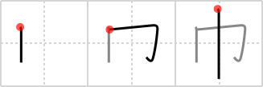

巾
← →
towel

Reading:
On-Yomi: キン、フク — Kun-Yomi: おお.い、ちきり、きれ、はば
Heisig story:
This character depicts a bolt of cloth wrapped around a pole. From there it gets its meaning of a towel.
Koohii stories:
1) [hknamida] 8-12-2007(63): If it looks like a towel, speaks like a towel and walks like a towel… I wonder why Heisig didn't include this one (as an actual kanji) in RtK 1.
2) [NeoGlitch] 6-11-2010(21): Obvious towel is obvious.
3) [sabretou] 14-9-2011(11): If you got this far and need a story for towel, then you sir, have failed.
4) [mantixen] 12-10-2008(11): A towel is used as a belt to hold in your "walking stick".
5) [synewave] 23-2-2007(9): Primative from RTK1.